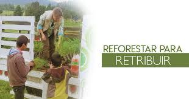

xddd
Reforestar
xd
Reforestar ¿Como reforestar? Ejemplos de reforestar
Debemos tener muy claras las diferencias entre reforestar, aforestar y plantar. En el primer caso estamos hablando de volver a poner bosque donde ya había una vegetación leñosa a través nuevos ejemplares; en el segundo, ponerlo donde antes no había y en el tercero, poner bosque donde no se sabe si hubo o no antes. Los beneficios de la reforestación son muchos y pueden suponer retener el suelo frente a las erosiones, fijar el carbono o favorecer algunos ciclos hidrológicos de la materia orgánica”, dice Fernando Valladares, biólogo del CSIC e investigador del departamento de Biogeografía y Cambio Global del Museo

xddddddd
xd
¿Como reforestar?
Los primeros cinturones verdes
Suele considerarse que el primer cinturón verde fue diseñado por Moisés hace más de 3 000 años en los ejidos de los alrededores de las doce ciudades levitas. Fue la respuesta a una de las mayores crisis climáticas de la historia, probable causa real de las conocidas como 10 plagas de Egipto.
Puede también considerarse cinturón verde el diseñado por Mahoma en el siglo VII alrededor de la emblemática ciudad de Medina, mediante la prohibición de talar árboles en una franja de 20 km.
En ambos casos, parece obvio que estos anillos tenían un carácter defensivo, pero también pretendían paliar los efectos de los entornos desérticos, como las tormentas de arena o las temperaturas extremas.
Fue a finales del siglo XVI cuando Isabel I de Inglaterra propuso un cinturón verde con un planteamiento más cercano al de nuestros días. Prohibió la construcción de edificios en un cinturón de 5 km alrededor de la ciudad de Londres, con la idea de mejorar la salubridad urbana y frenar la expansión de epidemias.
xddddddd
Los árboles, clave en urbanismo
Ya en el siglo XX, se conceptúan los cinturones verdes como un tipo de suelo en la planificación urbanística. Su objetivo es conservar áreas de vegetación salvaje o terrenos agrícolas alrededor de los cascos urbanos.
A pesar de las críticas basadas en que los cinturones verdes favorecen las urbes difusas frente al modelo compacto más sostenible, en la actualidad se ha avanzado incorporando un aspecto importante para el desarrollo sostenible de las ciudades en el siglo XXI: los corredores verdes urbanos.
Los paseos arbolados, los ríos en sus tramos urbanos o el aprovechamiento de redes de infraestructuras sirven para incorporar biodiversidad y servicios ecosistémicos de la periferia al centro de las ciudades.